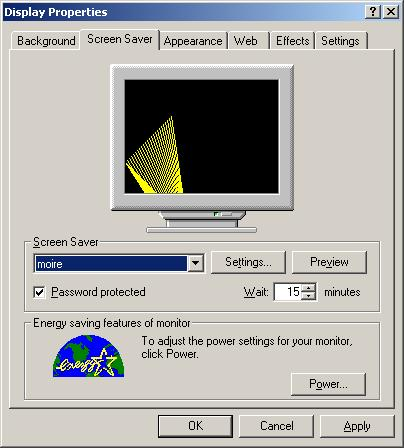
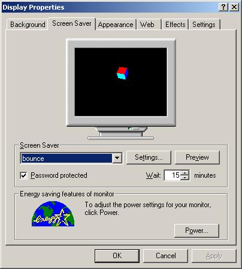

| SaverScreens | ||||||||||||
| Home | | | Introduction | | | Documentation | | | News | | | Support | | | Download | | | License |
| Introduction » |
SaverScreens has evolved from a
pre-SaverBeans incarnation
with the aim of providing a higher-level API for building screensavers in Java. Whilst SaverBeans provides
a good foundation for frame-based rendering, there is no support (at this time!) for Layout- and
Java3D-based screensavers.
A SaverScreens screensaver should extend one of the following three abstract classes:
|
| Installation » |
To install SaverScreens on your system you need to do the following:
|
| Moire » |
| Moire is a simple demonstration of a 2D-based screensaver.  |
| Bounce » |
| Bounce demonstrates how to create a Java3D-based screensaver.  |
| Copyright 2005 ©, Ben Fortuna |